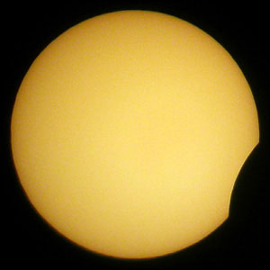
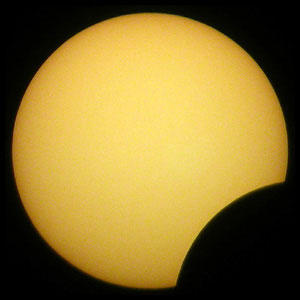
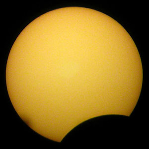
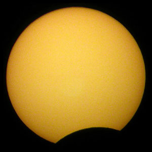
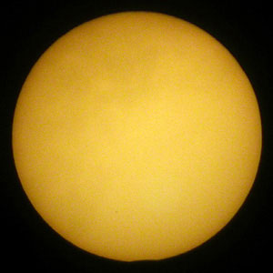
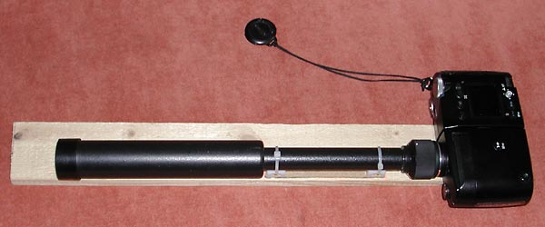

Partial Sun eclipse on 2005-10-03

11:55

12:00

12:11

12:16

12:29

12:40

12:54

13:06

13:18

13:24

13:26

13:28
I used a digicam "Nikon cp-4500" and a small telescope "Tourist" 10x30mm.

Before the lens there is an optical filter made of a diskette. This filter decreases light 2000 times. Exposure was 1/1000 sec, lens iris was 1/11. White balance is tuned to get sun disk color yellow, although the diskette is dark-red. I watched the sun eclipse at Moscow, so under the snaps there is Moscow winter time (msk).